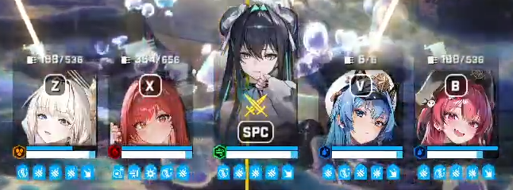

https://www.youtube.com/watch?v=6DudrzT3Z9M
뿡뿡이 + 잡몹 스테이지
잡몹 죽창이 아프니 잡몹을 먼저 잡고 뿡뿡이 딜은 헬름 힐로 버티는 방법임
버스트1 세크라
세이렌 잡고 가운데 랩쳐무리 중 가장 먼저 기모으는놈 때려서 기절걸기
버스트 차면 그 다음 빨리 기모으는놈한테 라피 폭발박기
나머지 빠르게 정리하기
여기서 정리하기 전에 누구라도 죽으면 리트
뿡뿡이 두마리가 연달아 나오는데 먼저 나온 뿡뿡이 때리면서 라피 유탄 폭발딜로 잡몹 제거
때리던 뿡뿡이가 점프를 이상한데로 해서 유탄으로 잡몹제거 안되면 리트
점프하는 사이에는 잡몹 점사
다음 버스트 켜기 전까지 뿡뿡이 정리하면 좋음
버스트2 세크헬
아까 치던 뿡뿡이 못잡았으면 먼저 정리하고 잡몹잡기
체력이 얼마 없으면 뿡뿡이 기절 먼저 걸기
남은 뿡뿡이는 다음 버스트가 차도 버스트 켜지 말고 잡기
여기서 반피 이하면 리트각
버스트3 세메마
보스 뿡뿡이 내려오는거 보이면 버스트 사용하고 점사
라피 딜 안들어가면 리트
기절 풀리고 점프하면 일단 잡몹 제거
내려온 뿡뿡이 점사하면 끝

스테이지 GOAT 편성 인정합니다